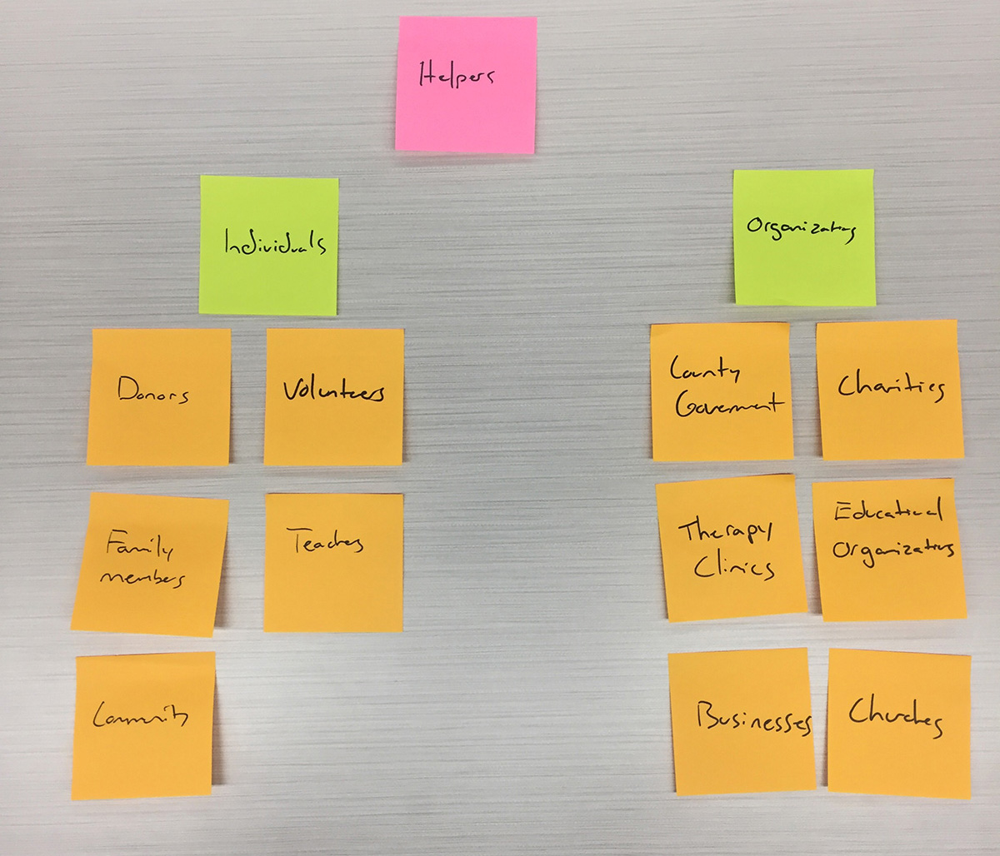

Audience and Goals
Audience

Groupings
For the website to effectively serve its function, I needed to determine the appropriate audience the client was trying to reach. Through a brainstorming excersice with Post-It Notes I was able to identify, group and prioritize the DCEC's audience. The result of my brainstorm was the realization that there were two main groups of audiences my client was trying to reach, those in need of aid and those willing to give aid.Group 1
The first group is those who are seeking aid such as the parents of special needs children and the children themselves. They are in need of information, resources and a way to ensure their child has a better future.Group 2
The second group is those who can provide aid whether through support or donations both monetary and non-monetary. This group can be broken down further into individuals and organizations. Individuals are those who can offer aid alone or in small groups not associated with an organization such as family members, community members, teachers, students, or volunteers. Organizations would consist of churches, the government, businesses, charities, therapy clinics or educational organizations.
Now that I know the groups of users I am trying to reach, I had to determine both their and their client's goals for the website to be effective.
Overarching Goals
| Client | Audience | Website |
|---|---|---|
|
|
|
Specific Goals
| User | Goals | Actions |
|---|---|---|
Parents of Special Needs Children |
|
|
Individuals |
|
|
Organizations |
|
|
Summary
In conclusion the two main audiences of the DCEC website are essentially those seeking aid and those who are capable of lending aid. The goals of the website are to direct those who in are in need of aid, to elicit donations and support from the community and to provide general information about the DCEC and what its program has to offer.